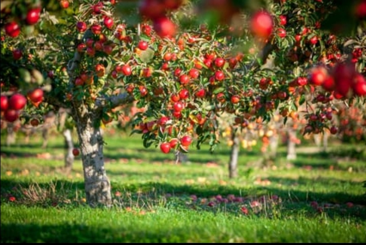

ABOUT
|
|

|
A TASTE OF TRADITION STRAIGHT FROM THE ORCHARD
Harvest Heaven Orchard, is a farm where nature meets flavour! We are a family-owned orchard located in Botha-Bothe district,
dedicated to provide freshest and most delicious fruits at highest quality straight from our fields to your home.
Our orchard specialize in growing a avariety of organic of fruits including apples, peaches, grapes, apricot and pears,
providing a delightful experience for families and friends. We are committed to sustainable farming practices, ensuring that
our fruits are not only delicious but also environmentally friendly.
Our mission is to cultivate a thriving community by providing fresh, organic fruits and promoting agricultural education.
Our vision is to be the leading provider of premium quality fruits and memorable orchard experiences.
THE MOST FRESHEST AND DELICIOUS FRUITS.
|
|